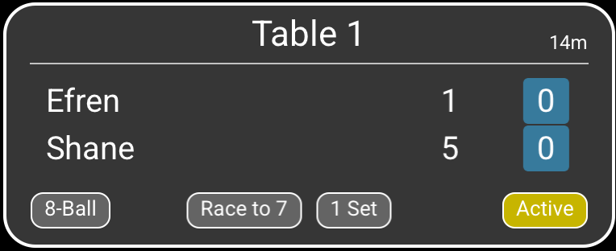

Ordered by table number
Matches are always sorted by table number in ascending order. Cards fill the grid from left to right and then continue on the next row.
LIVE OVERVIEW
Monitoring brings the matches from all available Smart-Score tables together on one screen. You can easily follow matches on the same network without any special configuration.
THE ROOM AT A GLANCE
Every table that is streaming a match appears as a separate card. Smart-Score refreshes the overview every second so score and status changes remain current.

Matches are always sorted by table number in ascending order. Cards fill the grid from left to right and then continue on the next row.
A running match is shown when streaming is enabled on its table and the devices can reach each other on the same network.
If no update is received from a table for about five seconds, its card is removed until that table becomes available again.
ONE TABLE IN DETAIL
Each card uses the same header and footer. The information in the center changes slightly between 8-/9-/10-Ball and Straight Pool.

123456Identifies the physical table and determines the card's position in the ordered overview.
Shows how long the match has been running, displayed in hours and minutes as required.
The two player names are shown in the same top-to-bottom order used by the scoring page.
For 8-Ball, 9-Ball, and 10-Ball, these values show the racks won by each player in the current set.
The colored boxes show how many sets each player has already won. They are displayed for 8-Ball, 9-Ball, and 10-Ball matches.
The footer shows the discipline, Race To target, sets required to win, and whether the match is Active or has ended.